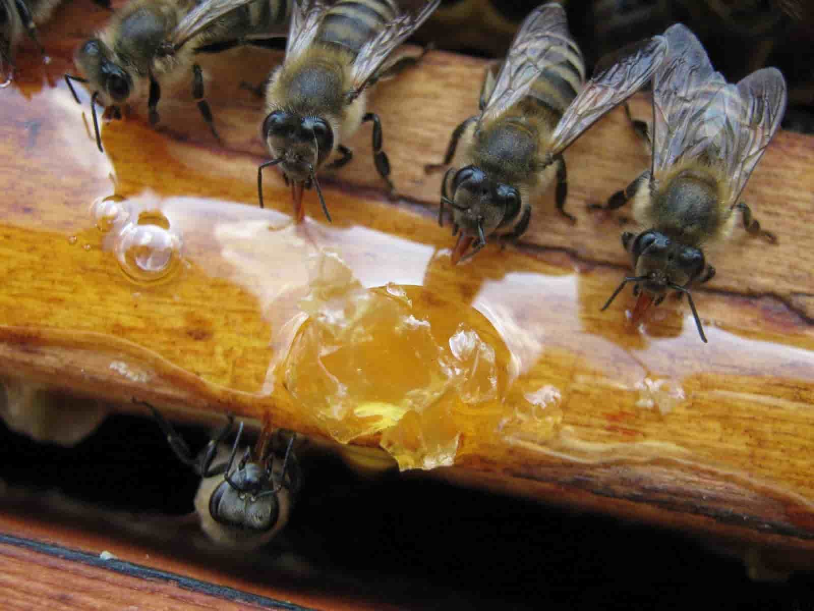
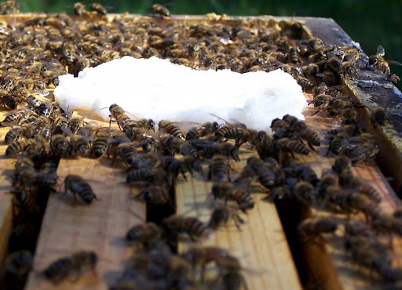

Подкормка
Подкормка ульев - это процесс добавления дополнительного пищевого ресурса в улье для поддержания здоровья и продуктивности пчел. Она может осуществляться в различных случаях и имеет разные цели, а также используются различные виды кормовых добавок. Рассмотрим более подробно:

Цели подкормки ульев:
Зимняя подкормка: Одной из основных целей подкормки является обеспечение улья дополнительными запасами корма на зимний период. В зимнее время пчелы не могут собирать достаточное количество нектара и пыльцы из-за низких температур и отсутствия цветения растений, поэтому подкормка помогает им выжить и поддерживать активность улья.
Весенняя подкормка: Подкормка также может быть проведена в весенний период для стимулирования разведения и развития пчелиной семьи после зимнего периода. Это позволяет пчёлам активно начать сбор нектара и пыльцы с наступлением весны.
Подкормка при нехватке пыльцы и нектара: В случае недостатка цветения или недоступности достаточного количества нектара и пыльцы в окружающей местности, подкормка может быть проведена для обеспечения пчёл дополнительным пищевым ресурсом.

Источники пищевых ресурсов:
Сахарный сироп: Один из наиболее распространённых способов подкормки ульев - это сахарный сироп, который состоит из сахара и воды. Этот метод обеспечивает быстрый и доступный источник энергии для пчёл.
Пыльцевые заменители: В некоторых случаях, особенно весной, когда недоступны цветущие растения, можно использовать пыльцевые заменители, содержащие белки, витамины и минералы, необходимые для развития пчёл и выращивания личинок.
Мед: В некоторых случаях, если у пчёл недостаточно запасов мёда, его можно использовать для подкормки ульев. Однако, важно обеспечить, чтобы мед не содержал примесей или патогенов, которые могут навредить пчелам.
Подкормка ульев играет важную роль в поддержании здоровья и продуктивности пчёл, особенно в периоды недоступности естественных пищевых ресурсов. Правильно проведённая подкормка помогает пчелам выжить в неблагоприятных условиях и обеспечивает улью необходимые ресурсы для развития и производства мёда.